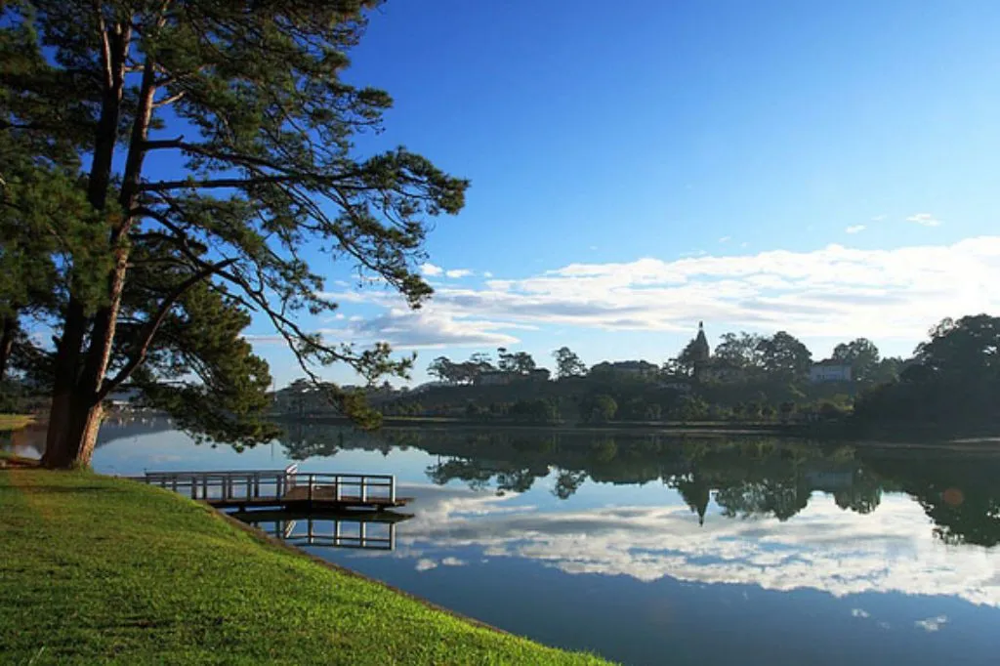
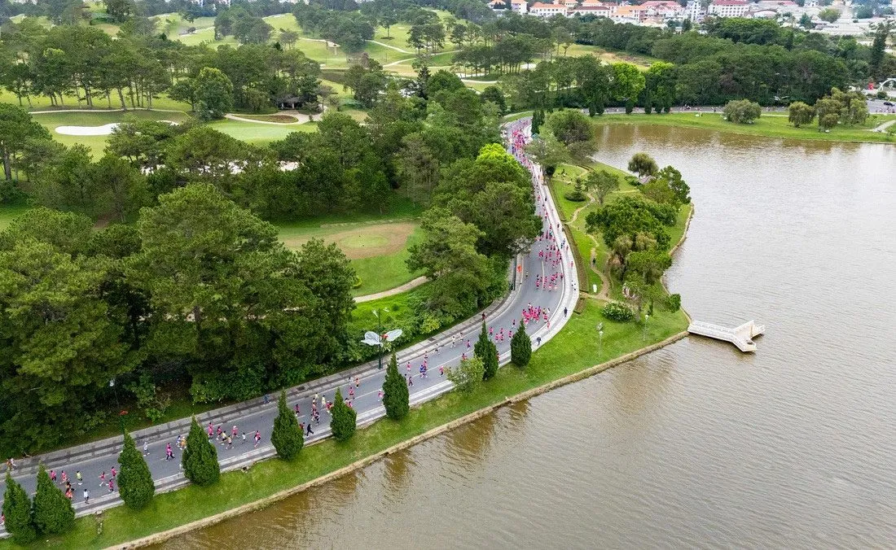
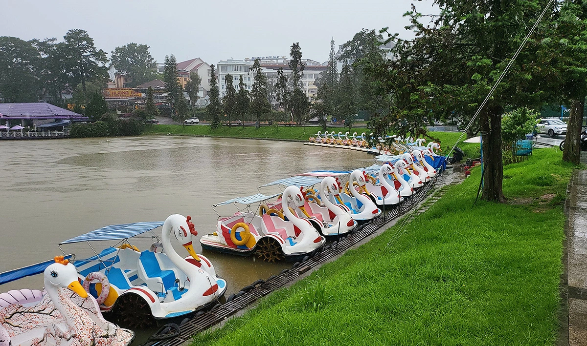
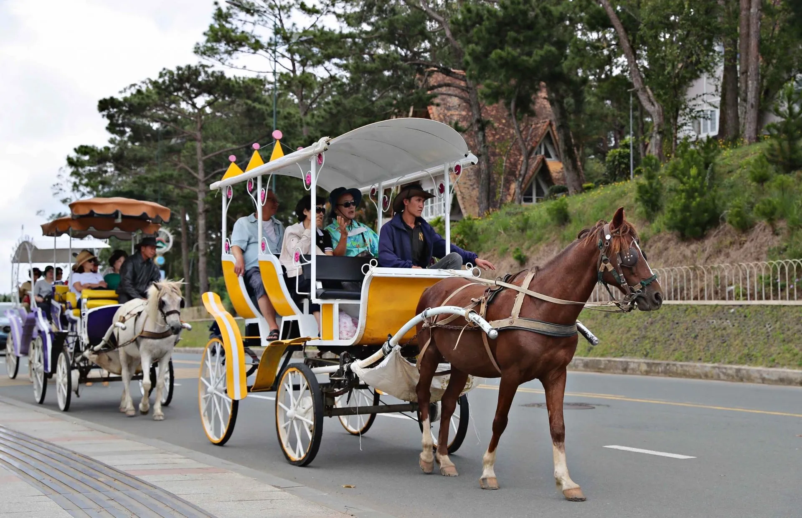
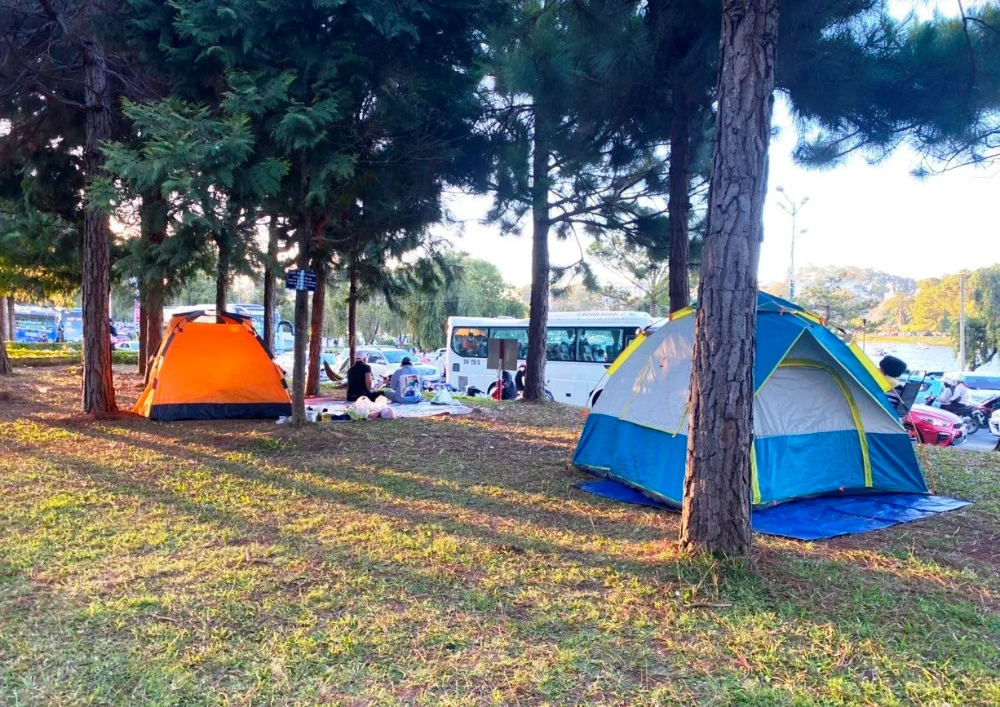
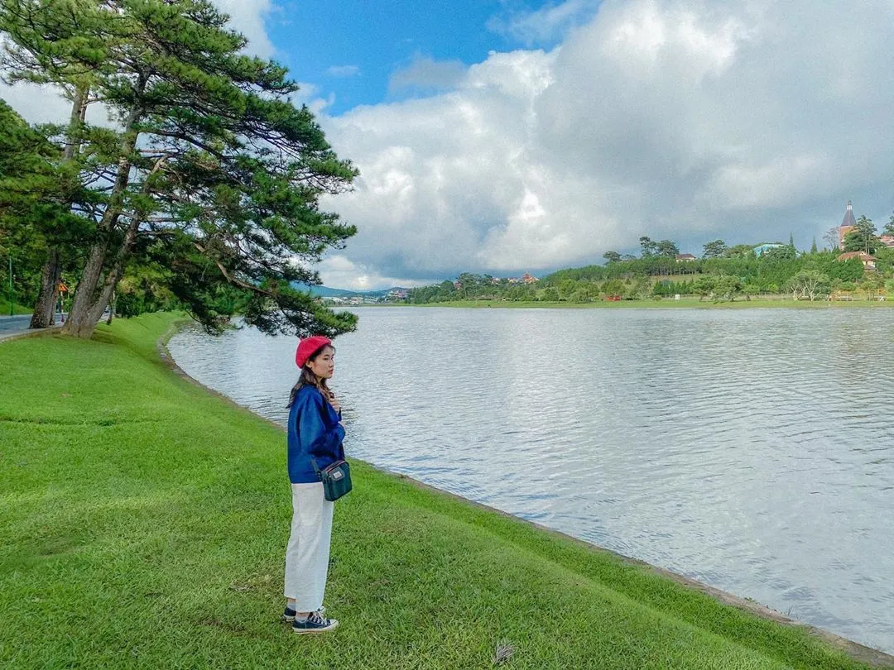
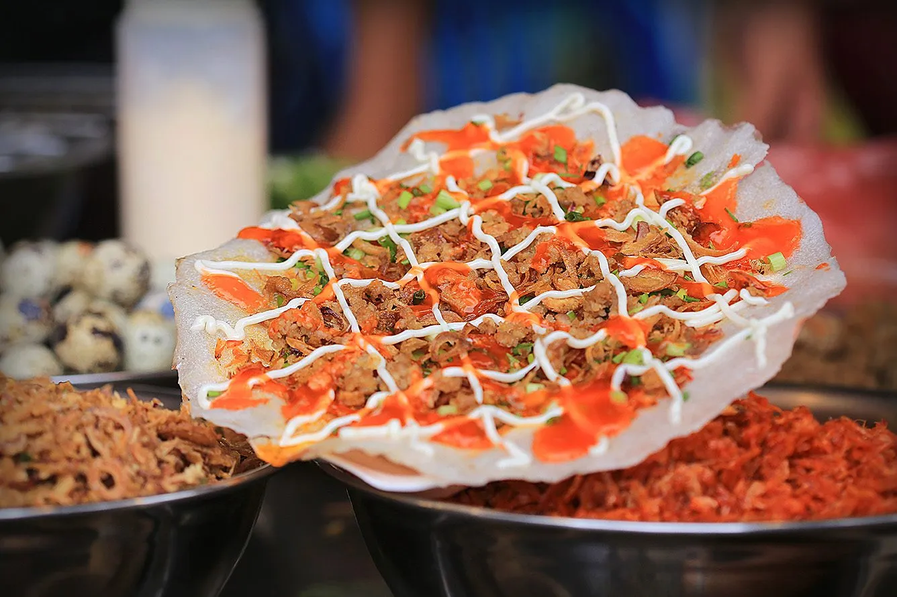

Explore Xuan Huong Lake in Da Lat with detailed review 2025
Table of Contents
- 1. Introduction to Xuan Huong Lake, Da Lat
-
2. What's interesting about Xuan Huong Lake in Da Lat during the day?
- 2.1. Duck riding at Xuan Huong Lake, Da Lat
- 2.2. Take a walk to see the beautiful scenery of Xuan Huong Lake in Da Lat by many different means
- 2.3. Organize a small picnic on the shore of Xuan Huong Lake in Da Lat with relatives and friends
- 2.4. Check-in preserves the romantic and poetic image of Ho Xuan Huong Da Lat
- 3. Experiences not to be missed at Xuan Huong Lake, Da Lat at night
- 4. Experience traveling to Xuan Huong Lake, Da Lat
- 5. Experience cuisine after exploring Xuan Huong Lake in Da Lat
Xuan Huong Lake is located right in the center of Da Lat city, an ideal stop for those who love the romantic beauty and chilly atmosphere typical of the mountain town. With its calm water surface reflecting the green pine trees, this place attracts a large number of tourists to stroll, cycle or enjoy coffee along the lake in a peaceful space.
When visiting Xuan Huong Lake, you will not only admire the poetic scenery but also have the opportunity to enjoy interesting experiences associated with local life and culture. This is the ideal destination for you to keep memorable memories, temporarily put aside the hustle and bustle of life and find relaxation for your soul in your journey to discover Da Lat in 2025.
1. Introduction to Xuan Huong Lake Da Lat
Xuan Huong Lake is a poetic symbol located in the heart of Da Lat city, attracting millions of tourists each year thanks to its gentle beauty, fresh air and quiet space. With a calm lake surface winding around rows of green pine trees, this is not only an ideal destination for relaxation but also a place to mark the typical cultural features of the misty mountain town.
1.1. Origin & history of Xuan Huong Lake, Da Lat

According to historical documents, Xuan Huong Lake was originally a small stream originating from Cam Ly waterfall, flowing through the land that was once the center of festive activities of the indigenous Lach people. In 1919, a French envoy named Cunhac proposed building a dam to block this stream, forming an artificial lake.
The area from Thuy Ta restaurant to major roads such as Bui Thi Xuan, Dinh Tien Hoang, Nguyen Thai Hoc is combined into Grand Lac Lake (Big Lake). In 1953, the name "Xuan Huong Lake" was officially born to commemorate the famous female artist of the same name, and in 1988, this place was recognized as a national scenic spot.
1.2. The Legend of Xuan Huong Lake in Da Lat

Xuan Huong Lake, considered the heart of Da Lat city, has a rare beauty with a romantic and peaceful space. When coming here, visitors can immerse themselves in the fresh air, enjoy relaxing moments to forget the troubles of everyday life. In particular, many people visiting Xuan Huong Lake cannot help but be curious about the origin of the unique name of this place. According to indigenous people, there are two popular theories explaining the name of the lake:
Hypothesis 1: Based on a poet's name
In the 19th century, female artist Ho Xuan Huong was known as "The Queen of Nom Poetry" - a prominent symbol in Vietnamese literature with her profound and romantic satirical works. According to this hypothesis, to commemorate and honor her, people gave her name to the lake in the heart of Da Lat, as a way to recall the poetic beauty and soaring spirit that her poetry conveys.
Hypothesis 2: Based on the fragrance of the lake in spring
The second theory is that every spring, the lake is filled with the gentle scent of plants and flowers, combined with the chirping of birds and colorful flowers, creating an enchanting natural picture. That spring scent is said to be the reason the ancients called this place Xuan Huong Lake - a name that both evokes the scent of spring and represents the typical poetic beauty of Da Lat.
1.3. Xuan Huong Lake Da Lat – Address & Directions

Xuan Huong Lake is located in Ward 1, right in the center of Da Lat city, Lam Dong province. The lake is surrounded by lush green grass, blooming flower gardens and a large pine forest, creating a harmonious scene between nature and urban areas.
As the largest lake in Da Lat, Xuan Huong Lake is easy to identify thanks to its prime location, surrounded by Tran Quoc Toan Street. Visitors can easily get here by taxi, motorbike taxi or personal vehicle. Just a few minutes away from Da Lat market or central hotels, you can immerse yourself in the fresh space and relax by the lake.
1.4. How wide is Xuan Huong Lake in Da Lat?

Xuan Huong Lake is an artificial lake with an area of about 25 hectares with a circumference of nearly 5km. The lake has a unique crescent shape, stretching more than 2km, embracing many prominent locations such as Lam Vien square, city flower garden, Yersin park and Cu Hill. This is also the ideal connection point between major tourist areas, creating favorable conditions for tourists to both visit and relax along the journey to explore Da Lat.
2. What's interesting about Xuan Huong Lake in Da Lat during the day?
Daytime is the ideal time to fully explore the bright and peaceful beauty of Xuan Huong Lake. The space is full of vitality, gentle sunlight blends with the green of the grass and trees creating an extremely relaxing scene. Below are attractive activities that you should not miss when visiting the lake during the day.
2.1. Duck riding at Xuan Huong Lake, Da Lat

For those who love new experiences and want to be closer to nature, duck-riding activities at Xuan Huong Lake will be the ideal choice. You can go to the intersection area between Dinh Tien Hoang and Tran Quoc Toan streets to rent a duck bike for about 30,000 VND/hour. The experience of floating on the water, letting yourself follow the gentle rowing rhythm will help you fully feel the shimmering, lyrical beauty of the lake.
2.2. Take a walk to admire the beautiful scenery of Xuan Huong Lake in Da Lat by many different means

Besides duck riding, you can also choose other forms to admire the beautiful scenery around the lake:
-
Horse carriage ride:A poetic form of sightseeing, suitable for tourists who love new feelings. From the boat wharf area, a horse-drawn carriage will take you through the romantic roads towards the city's flower gardens. This is a great way to explore the charming beauty of Da Lat without much exercise.
-
Twin cycling:The space around the lake is covered with cool pine trees and fresh air, ideal for relaxing cycling with relatives or friends. This is also an opportunity for you to preserve memorable moments amid poetic scenery.
2.3. Organize a small picnic on the banks of Xuan Huong Lake in Da Lat with relatives and friends

The lakeshore has many spacious lawns, very suitable for organizing light picnics. Bring a rug, some snacks and a few small games, and you can enjoy fun time with relatives or friends amid a peaceful natural setting. Remember to clean up after finishing to preserve the inherent beauty of the lake.
2.4. Check-in preserves the romantic and poetic image of Xuan Huong Lake in Da Lat

Don't forget to bring a camera or phone to capture beautiful moments at the lake. Morning or evening is the ideal time to check in with a cup of warm coffee or hot milk, when the lake surface reflects the gentle sunlight and the surrounding scenery becomes more gentle and dreamy than ever. These will definitely be "memorable" photos in your journey to discover Da Lat.
3. Experiences not to be missed at Xuan Huong Lake, Da Lat at night
When night falls, Xuan Huong Lake takes on a quiet and seductive beauty. The typical cold air of Da Lat makes the experience of walking around the lake in the evening even more poetic. Below are attractive activities that you should not miss when exploring Xuan Huong Lake at night.
3.1. Enjoy delicious Da Lat snacks near Xuan Huong Lake

At night, Da Lat becomes foggy and chilly, making lakeside snacks even more attractive. Just step onto the street, you will see a series of carts and stalls selling all kinds of hot specialties such as grilled rice paper, grilled corn, grilled sweet potatoes or cups of hot soy milk. Not only do they help dispel the cold, these dishes also have the typical flavor of the mountain town.
3.2. Sip a cup of coffee and admire the beauty of Da Lat at night at Xuan Huong Lake
Around Xuan Huong Lake, there are many outstanding cafes such as Thuy Ta, Bich Cau, Thanh Thuy, where you can sip coffee and watch the sparkling reflections on the lake surface. The romantic, gentle space here is very suitable for relaxing, chatting with friends or simply enjoying a peaceful night in the foggy city.
3.3. Participate in street singing exchanges near Xuan Huong Lake
In the evening, the lakeside area often hosts street music performances, creating a vibrant yet artistic space. You can comfortably listen or participate in exchanges, sing with the band, and connect with new friends through music. This is an interesting cultural activity that helps Da Lat's nightlife become more lively and memorable.